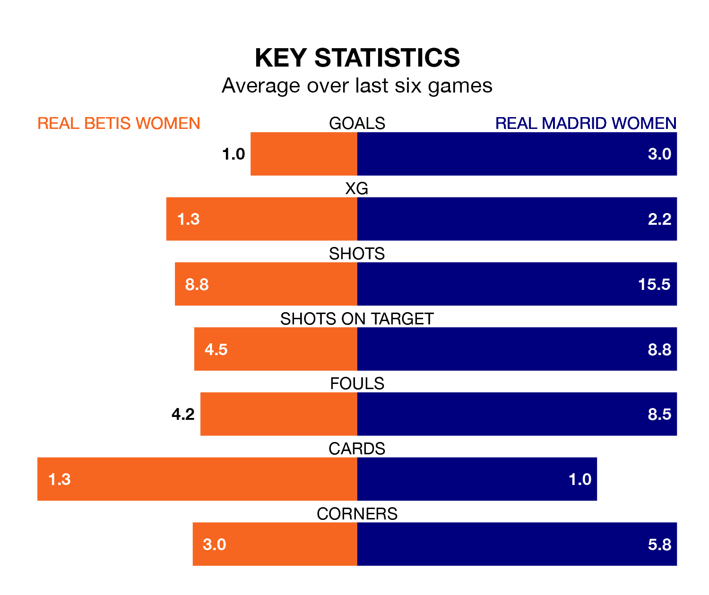

Mid-season relegation candidates Real Betis Women face a challenge against high-flying Real Madrid Women at Ciudad Deportiva Luis de Sol on Sunday.
Real Betis Women are 14th in the Primera Division Women table, and have picked up four wins and one draw in their 16 games to date.
Madrid Women, meanwhile, are second in the standings with 36 points, having won 12 and drawn none of their first 15 matches, and are nine points behind table-toppers Barcelona Women.
Betis Women are in awful form in Primera Division Women, with no wins and six losses from their last six games.
With five wins and one loss over that period, Madrid Women's form is much better – they have taken 15 points from 18, compared to the home team's zero.
With 42 goals in 15 games so far this season, the visitors are the league's second-highest scorers with 2.8 goals per game. And they are conceding fewer than average, letting in 19 goals at a rate of 1.3 per game.
Betis Women, meanwhile, are below average scorers, with 1.0 goal per game, compared to a league average of 1.6. They have conceded 2.5 goals per game.
In the last 10 years, Betis Women and Madrid Women have played each other on seven occasions. Madrid Women won six of them and they drew once.
On average, Betis Women scored 0.6 goals and Madrid Women 3.0 in those matches.
Their last meeting was on October 4, when Madrid Women won 5-1 at home.
With María Isabel Rodríguez Rivero between the sticks, Madrid Women can rely on one of the league's safest pair of hands. She has kept four clean sheets in her 13 appearances this season in Primera Division Women.
In Betis Women's net, Paula Vizoso Prieto has three clean sheets in 11 games. She has conceded a goal every 38 minutes, three times as often as the 117 minutes between goals for Rodríguez Rivero.
Betis Women's last match was on February 3, a 2-1 loss against Villarreal Women, with Blanca Muñoz getting the goal for Betis Women.
Madrid Women beat Valencia Women 7-1 last time out, also on February 3, with Caroline Møller Hansen (three), Linda Lizeth Caicedo Alegría, Maite Oroz Areta, Naomie Feller and Signe Kallesøe Bruun on the scoresheet.
Updated: 14:59 (UTC), 05/02/24